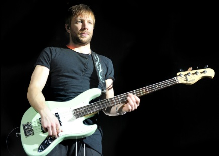
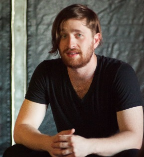

| Discografía | Newsletter |
|---|
Imagine Dragons es una banda de rock alternativo originaria de Las Vegas, Nevada, formada en 2008. Está compuesta por Dan Reynolds (vocalista), Wayne Sermon (guitarrista), Ben McKee (bajista) y Daniel Platzman (baterista). Su música combina elementos de rock, pop y electrónica, creando un sonido único y reconocible.
|  |  |
|---|
A lo largo de su carrera, Imagine Dragons ha lanzado éxitos que han marcado a millones de fans en todo el mundo. Algunas de sus canciones más populares incluyen:
Imagine Dragons ha recibido numerosos premios, incluidos premios Grammy, Billboard Music Awards y American Music Awards. También han sido reconocidos por su compromiso con causas sociales, como la salud mental y los derechos LGBTQ+.
Actualmente la banda se encuentra de gira mundial , presentando su último album LOOM, entre los temas que cantan, también incluyen muchos de sus iconicos hits que han llevado a la banda al top mundial.
En el siguiente link, podreis acceder a la compra de entradas en cualquiera de los paises que piensan visitar.
Ver entradas en el sitio oficial